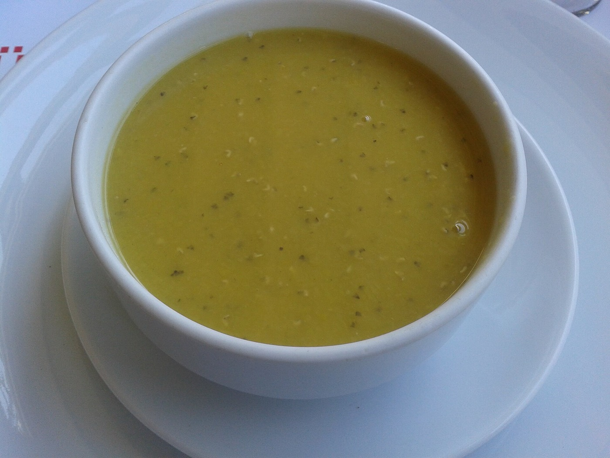
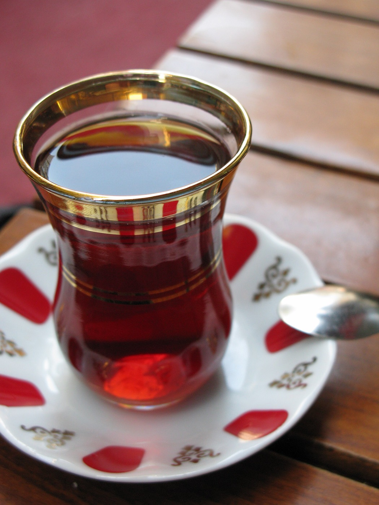
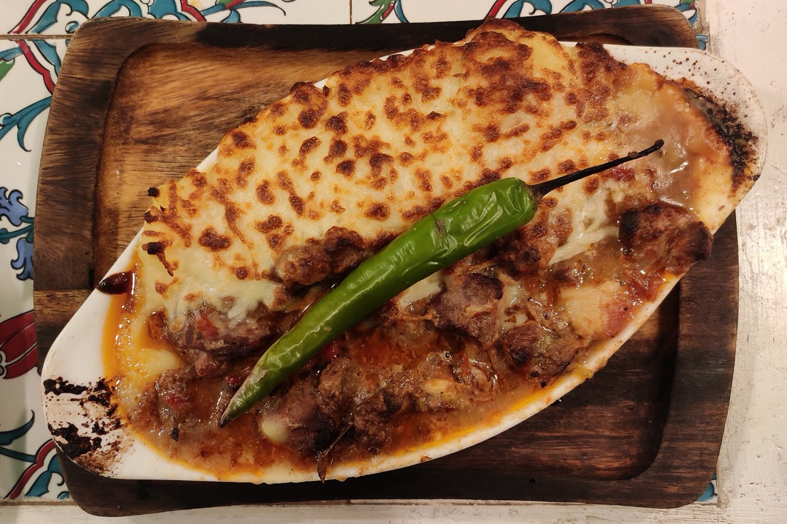

Lentil soup, kebab off the grill, warm bread and tea. All halal.


Food the way it tastes in Turkey, made fresh in a clean, modern room. Sit down and the tea comes first.

72 Chaweng Beach Road, Bo Put, Koh Samui 84320. A little hidden: look for our sign at the back.
Your hours go here. Tell us and we will add them. Booking is a good idea at peak hours.